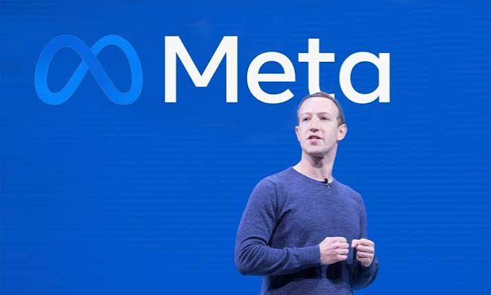

Mark Zuckerberg
The Biography: From Harvard Dorms to Meta
-By Odinanwa Obinna

Chapter 1: Early Life & ZuckNet
Born May 14, 1984, in White Plains, NY, Mark displayed early talent in coding. At age 12, he built an instant messaging network called "ZuckNet" for his family home and his father's dental practice. At Phillips Exeter Academy, he built Synapse AI, an intelligent music player that caught the attention of Microsoft and AOL.
Chapter 2: Harvard & Facemash
Enrolling at Harvard in 2002, Mark built CourseMatch and Facemash. On February 4, 2004, operating from his Kirkland House dorm room, he launched "TheFacebook" with Eduardo Saverin, Dustin Moskovitz, and Chris Hughes. He dropped out of Harvard in mid-2004 to move operations to Palo Alto.

Chapter 3: Silicon Valley & IPO
In California, Zuckerberg secured early investments from Peter Thiel and Accel Partners. He turned down massive acquisition offers from Yahoo and Viacom to keep control. In May 2012, Zuckerberg led Facebook through a historic IPO, making it one of the fastest tech companies to reach high global valuation.

Chapter 4: Acquisitions & Empire
Mark orchestrated iconic acquisitions, buying Instagram in 2012 for $1 billion and WhatsApp in 2014 for $19 billion. He successfully navigated the transition to mobile devices, solidifying his role as one of the most influential technology leaders of the 21st century.

Chapter 5: Meta & Philanthropy
In 2021, Mark rebranded the company to Meta Platforms, shifting focus toward VR/AR, open-source AI, and spatial computing. Alongside his wife Priscilla Chan, he founded the Chan Zuckerberg Initiative (CZI), pledging 99% of his Meta wealth to solve major global challenges.